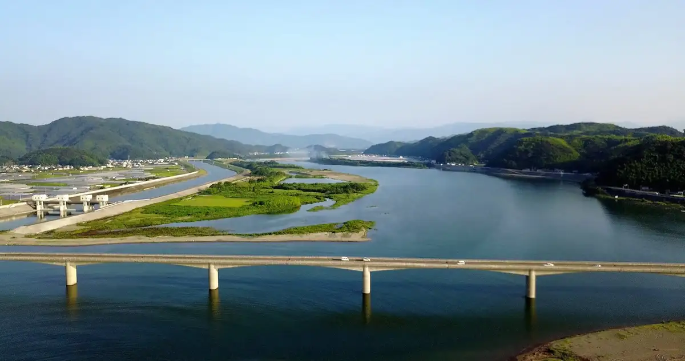
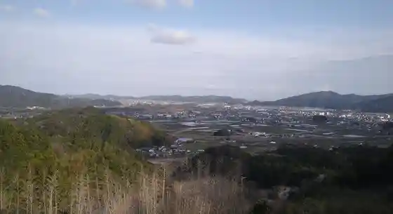
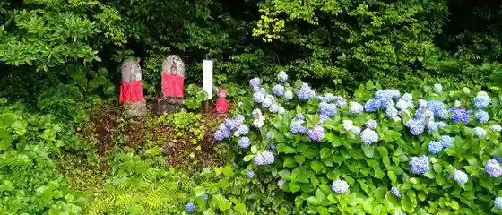
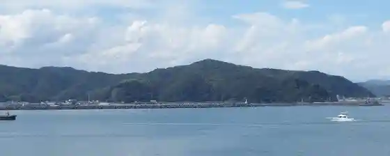
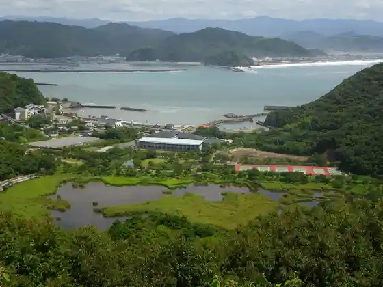

Tosa
Tosa · Kochi
Tosa
Highlighted on the Kochi map.

Stay
Tosa Ryu Onsen Sanyo So
Vira Santoriini
Koteji B&M
Shinderera Shiro Wo Moderu Nishita Kawa Village Tei Hanare
THE ROAM
Takaoka Guest House
Usa Guest House
Dining
Yakiniku Gijuku
Bii & Emu Safu & Kafe
Takami no Tako Yaki Takaoka Mise
Nabeyaki Ki Ramen Goku
Taiwan Ryori Kichi Gen
O Ko Yaki
Umi Town Shokudo Hinasaku
Men Roku Ya Kochi Tosa Mise
Doraibuin Sutoppu
Kai Sen Hamayaki Ki Baikingu Ami Hama Shokudo
no Shiya Honke
Kappo Gyokuhai
Izakaya
O Konomi Yaki Hikobe
Hagi no Chaya
I Shoku Kan Ko
Onsen
Tosa Ryu Onsen Sanyo So Public Bath
Experience
Shinkyo Chiku Kanko Koryu Shisetsu Hae
Sights
Niyodogawa Kako Bridge
Kiyotaki Tera

Seiryu Tera

Usa Fishing Port

Kanigaike

Shinkyo Green Park